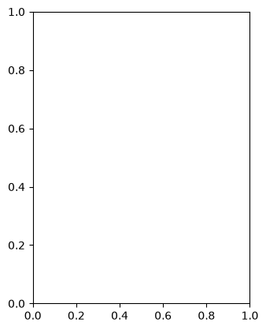

USGS dataretrieval Python Package get_continuous() Examples
This notebook provides examples of using the Python dataretrieval package to retrieve continuous (instantaneous, or “unit”) values data for a United States Geological Survey (USGS) monitoring location. The dataretrieval package provides a collection of functions to get data from the USGS Water Data API and other online sources of hydrology and water quality data.
Install the Package
Use the following code to install the package if it doesn’t exist already within your Jupyter Python environment.
[1]:
!pip install dataretrieval
Requirement already satisfied: dataretrieval in /opt/hostedtoolcache/Python/3.13.13/x64/lib/python3.13/site-packages (0.1.dev1+gb375f19c6)
Requirement already satisfied: httpx in /opt/hostedtoolcache/Python/3.13.13/x64/lib/python3.13/site-packages (from dataretrieval) (0.28.1)
Requirement already satisfied: pandas<4.0.0,>=2.0.0 in /opt/hostedtoolcache/Python/3.13.13/x64/lib/python3.13/site-packages (from dataretrieval) (3.0.3)
Requirement already satisfied: numpy>=1.26.0 in /opt/hostedtoolcache/Python/3.13.13/x64/lib/python3.13/site-packages (from pandas<4.0.0,>=2.0.0->dataretrieval) (2.4.6)
Requirement already satisfied: python-dateutil>=2.8.2 in /opt/hostedtoolcache/Python/3.13.13/x64/lib/python3.13/site-packages (from pandas<4.0.0,>=2.0.0->dataretrieval) (2.9.0.post0)
Requirement already satisfied: six>=1.5 in /opt/hostedtoolcache/Python/3.13.13/x64/lib/python3.13/site-packages (from python-dateutil>=2.8.2->pandas<4.0.0,>=2.0.0->dataretrieval) (1.17.0)
Requirement already satisfied: anyio in /opt/hostedtoolcache/Python/3.13.13/x64/lib/python3.13/site-packages (from httpx->dataretrieval) (4.13.0)
Requirement already satisfied: certifi in /opt/hostedtoolcache/Python/3.13.13/x64/lib/python3.13/site-packages (from httpx->dataretrieval) (2026.5.20)
Requirement already satisfied: httpcore==1.* in /opt/hostedtoolcache/Python/3.13.13/x64/lib/python3.13/site-packages (from httpx->dataretrieval) (1.0.9)
Requirement already satisfied: idna in /opt/hostedtoolcache/Python/3.13.13/x64/lib/python3.13/site-packages (from httpx->dataretrieval) (3.17)
Requirement already satisfied: h11>=0.16 in /opt/hostedtoolcache/Python/3.13.13/x64/lib/python3.13/site-packages (from httpcore==1.*->httpx->dataretrieval) (0.16.0)
Load the package so you can use it along with other packages used in this notebook.
[2]:
from datetime import date
from IPython.display import display
import dataretrieval.waterdata as waterdata
Basic Usage
The dataretrieval package has several functions that allow you to retrieve data from the USGS Water Data API. This example uses the get_continuous() function to retrieve continuous (instantaneous) streamflow data for a USGS monitoring location. The following arguments are supported:
monitoring_location_id (string or iterable of strings): One or more unique monitoring location identifiers. An ID combines the agency code with the location number, separated by a hyphen (e.g.
USGS-10109000).parameter_code (string or iterable of strings): One or more 5-digit USGS parameter codes identifying the constituent measured and its units (e.g.
00060for discharge).time (string): The date or time interval for which to retrieve observations, given as an RFC 3339 date-time, a bounded or half-bounded interval (e.g.
2021-09-01/2021-09-30), or an ISO 8601 duration. Continuous data are requested withtime, and no more than three years of data may be requested per call. Iftimeis omitted, the service returns the most recent year of measurements.
Example 1: Get unit value data for a specific parameter at a USGS monitoring location between a begin and end date
[3]:
# Set the parameters needed for the web service call
siteID = "USGS-10109000" # LOGAN RIVER ABOVE STATE DAM, NEAR LOGAN, UT
parameterCode = "00060" # Discharge
startDate = "2021-09-01"
endDate = "2021-09-30"
# Get the data
discharge = waterdata.get_continuous(
monitoring_location_id=siteID, parameter_code=parameterCode, time=f"{startDate}/{endDate}"
)
print("Retrieved " + str(len(discharge[0])) + " data values.")
Retrieving: continuous · 1 page · 2,785 rows
No API key detected — register for higher rate limits at https://api.waterdata.usgs.gov/signup/
Retrieved 2785 data values.
Interpreting the Result
The get_continuous() function returns a tuple of two objects: a pandas data frame holding the observed values for the time period requested, and an associated metadata object. The data frame is flat, with a default integer index and one row per observation; the observation timestamps are stored in a tz-aware UTC time column rather than being used as the index.
Once you’ve got the data frame, there are several useful things you can do to explore the data.
[4]:
# Display the data frame as a table
display(discharge[0])
| time_series_id | monitoring_location_id | parameter_code | statistic_id | time | value | unit_of_measure | approval_status | qualifier | last_modified | continuous_id | |
|---|---|---|---|---|---|---|---|---|---|---|---|
| 0 | 92bf2ab5ea7d4c0080a619fbd5e360d9 | USGS-10109000 | 00060 | 00011 | 2021-09-01 00:00:00+00:00 | 55.9 | ft^3/s | Approved | None | 2025-07-03 18:26:44.437050+00:00 | c1d51022-849f-4c9c-a680-f5956bab8bc9 |
| 1 | 92bf2ab5ea7d4c0080a619fbd5e360d9 | USGS-10109000 | 00060 | 00011 | 2021-09-01 00:15:00+00:00 | 55.9 | ft^3/s | Approved | None | 2025-07-03 18:26:44.437050+00:00 | e283ab0d-0dc7-4c7c-b29a-11a990f47c5b |
| 2 | 92bf2ab5ea7d4c0080a619fbd5e360d9 | USGS-10109000 | 00060 | 00011 | 2021-09-01 00:30:00+00:00 | 55.9 | ft^3/s | Approved | None | 2025-07-03 18:26:44.437050+00:00 | 33a3d549-51e2-4b47-b420-b607fd0b3497 |
| 3 | 92bf2ab5ea7d4c0080a619fbd5e360d9 | USGS-10109000 | 00060 | 00011 | 2021-09-01 00:45:00+00:00 | 55.9 | ft^3/s | Approved | None | 2025-07-03 18:26:44.437050+00:00 | f3fb4785-5109-434e-8625-c59f5554cd18 |
| 4 | 92bf2ab5ea7d4c0080a619fbd5e360d9 | USGS-10109000 | 00060 | 00011 | 2021-09-01 01:00:00+00:00 | 55.9 | ft^3/s | Approved | None | 2025-07-03 18:26:44.437050+00:00 | c91ea645-9a58-4265-b0e0-d628dd4000ab |
| ... | ... | ... | ... | ... | ... | ... | ... | ... | ... | ... | ... |
| 2780 | 92bf2ab5ea7d4c0080a619fbd5e360d9 | USGS-10109000 | 00060 | 00011 | 2021-09-29 23:00:00+00:00 | 53.2 | ft^3/s | Approved | None | 2025-07-03 18:26:44.437050+00:00 | 7c019805-71a2-4f6e-85c6-901274cb124e |
| 2781 | 92bf2ab5ea7d4c0080a619fbd5e360d9 | USGS-10109000 | 00060 | 00011 | 2021-09-29 23:15:00+00:00 | 53.2 | ft^3/s | Approved | None | 2025-07-03 18:26:44.437050+00:00 | 20f92c76-913e-40e0-b1e8-7ad590503c22 |
| 2782 | 92bf2ab5ea7d4c0080a619fbd5e360d9 | USGS-10109000 | 00060 | 00011 | 2021-09-29 23:30:00+00:00 | 53.2 | ft^3/s | Approved | None | 2025-07-03 18:26:44.437050+00:00 | 987b74ac-c2d1-44ce-aa92-06184f0cc29b |
| 2783 | 92bf2ab5ea7d4c0080a619fbd5e360d9 | USGS-10109000 | 00060 | 00011 | 2021-09-29 23:45:00+00:00 | 53.2 | ft^3/s | Approved | None | 2025-07-03 18:26:44.437050+00:00 | a5540ab1-47db-4bdc-947f-e4f5a7ba1884 |
| 2784 | 92bf2ab5ea7d4c0080a619fbd5e360d9 | USGS-10109000 | 00060 | 00011 | 2021-09-30 00:00:00+00:00 | 53.2 | ft^3/s | Approved | None | 2025-07-03 18:26:44.437050+00:00 | b3bc536e-615c-4ae2-a05a-df77b318f40a |
2785 rows × 11 columns
Show the data types of the columns in the resulting data frame.
[5]:
print(discharge[0].dtypes)
time_series_id str
monitoring_location_id str
parameter_code str
statistic_id str
time datetime64[us, UTC]
value float64
unit_of_measure str
approval_status str
qualifier object
last_modified datetime64[us, UTC]
continuous_id str
dtype: object
Get summary statistics for the streamflow values.
[6]:
discharge[0].describe()
[6]:
| value | |
|---|---|
| count | 2785.000000 |
| mean | 51.565278 |
| std | 4.184643 |
| min | 24.400000 |
| 25% | 49.100000 |
| 50% | 53.200000 |
| 75% | 54.500000 |
| max | 76.400000 |
Make a quick time series plot.
[7]:
ax = discharge[0].plot(x="time", y="value", style=".")
ax.set_xlabel("Date")
ax.set_ylabel("Streamflow (cfs)")
[7]:
Text(0, 0.5, 'Streamflow (cfs)')

The other part of the result returned from the get_continuous() function is a metadata object that contains information about the query that was executed to return the data. For example, you can access the URL that was assembled to retrieve the requested data from the USGS Water Data API.
[8]:
print("The query URL used to retrieve the data from the Water Data API was: " + discharge[1].url)
The query URL used to retrieve the data from the Water Data API was: https://api.waterdata.usgs.gov/ogcapi/v0/collections/continuous/items?monitoring_location_id=USGS-10109000¶meter_code=00060&time=2021-09-01%2F2021-09-30&skipGeometry=false&limit=50000
Additional Examples
Example 2: Get unit values for an individual monitoring location and parameter between a start and end date.
NOTE: By default, start and end date are evaluated as local time, and the result is returned with the timestamps in the local time of the monitoring location.
[9]:
site_id = "USGS-05114000"
startDate = "2014-10-10"
endDate = "2014-10-10"
discharge2 = waterdata.get_continuous(
monitoring_location_id=site_id, parameter_code=parameterCode, time=f"{startDate}/{endDate}"
)
print("Retrieved " + str(len(discharge2[0])) + " data values.")
display(discharge2[0])
Retrieving: continuous · 1 page · 1 rows
Retrieved 1 data values.
| time_series_id | monitoring_location_id | parameter_code | statistic_id | time | value | unit_of_measure | approval_status | qualifier | last_modified | continuous_id | |
|---|---|---|---|---|---|---|---|---|---|---|---|
| 0 | 987c2d767a5a4981acffd51fa253b63b | USGS-05114000 | 00060 | 00011 | 2014-10-10 00:00:00+00:00 | 481 | ft^3/s | Approved | None | 2025-09-01 12:22:04.139884+00:00 | bde6e74b-0d6c-4f13-bbc8-8ed1ff336fc6 |
Example 3: Get unit values for an individual monitoring location for today
[10]:
today = str(date.today())
discharge_today = waterdata.get_continuous(
monitoring_location_id=site_id, parameter_code=parameterCode, time=f"{today}/{today}"
)
print("Retrieved " + str(len(discharge_today[0])) + " data values.")
display(discharge_today[0])
Retrieving: continuous · 1 page · 1 rows
Retrieved 1 data values.
| time_series_id | monitoring_location_id | parameter_code | statistic_id | time | value | unit_of_measure | approval_status | qualifier | last_modified | continuous_id | |
|---|---|---|---|---|---|---|---|---|---|---|---|
| 0 | 987c2d767a5a4981acffd51fa253b63b | USGS-05114000 | 00060 | 00011 | 2026-06-01 00:00:00+00:00 | 98.8 | ft^3/s | Provisional | None | 2026-06-01 00:14:29.299038+00:00 | 91f86cf8-d524-403d-8bb6-0234eb2e00b3 |
Example 4: Retrieve data using UTC times
NOTE: Adding ‘Z’ to the input time parameters indicates that they are in UTC rather than local time. The time stamps associated with the data returned are still in the local time of the USGS monitoring location.
[11]:
discharge_UTC = waterdata.get_continuous(
monitoring_location_id=site_id,
parameter_code=parameterCode,
time="2014-10-10T00:00Z/2014-10-10T23:59Z",
)
print("Retrieved " + str(len(discharge_UTC[0])) + " data values.")
display(discharge_UTC[0])
Retrieving: continuous · 1 page · 96 rows
Retrieved 96 data values.
| time_series_id | monitoring_location_id | parameter_code | statistic_id | time | value | unit_of_measure | approval_status | qualifier | last_modified | continuous_id | |
|---|---|---|---|---|---|---|---|---|---|---|---|
| 0 | 987c2d767a5a4981acffd51fa253b63b | USGS-05114000 | 00060 | 00011 | 2014-10-10 00:00:00+00:00 | 481 | ft^3/s | Approved | None | 2025-09-01 12:22:04.139884+00:00 | bde6e74b-0d6c-4f13-bbc8-8ed1ff336fc6 |
| 1 | 987c2d767a5a4981acffd51fa253b63b | USGS-05114000 | 00060 | 00011 | 2014-10-10 00:15:00+00:00 | 481 | ft^3/s | Approved | None | 2025-09-01 12:22:04.139884+00:00 | ac396e6b-d731-419a-9f7f-807b5e3cec73 |
| 2 | 987c2d767a5a4981acffd51fa253b63b | USGS-05114000 | 00060 | 00011 | 2014-10-10 00:30:00+00:00 | 480 | ft^3/s | Approved | None | 2025-09-01 12:22:04.139884+00:00 | 889af5a8-850c-46e0-afb3-e472991a7001 |
| 3 | 987c2d767a5a4981acffd51fa253b63b | USGS-05114000 | 00060 | 00011 | 2014-10-10 00:45:00+00:00 | 480 | ft^3/s | Approved | None | 2025-09-01 12:22:04.139884+00:00 | ac1198c8-0857-43e1-998b-f1e7382429eb |
| 4 | 987c2d767a5a4981acffd51fa253b63b | USGS-05114000 | 00060 | 00011 | 2014-10-10 01:00:00+00:00 | 480 | ft^3/s | Approved | None | 2025-09-01 12:22:04.139884+00:00 | e787d026-fce2-4f1f-a253-d2e0af849e06 |
| ... | ... | ... | ... | ... | ... | ... | ... | ... | ... | ... | ... |
| 91 | 987c2d767a5a4981acffd51fa253b63b | USGS-05114000 | 00060 | 00011 | 2014-10-10 22:45:00+00:00 | 478 | ft^3/s | Approved | None | 2025-09-01 12:22:04.139884+00:00 | 0922c174-5d17-4751-88a6-63455b407486 |
| 92 | 987c2d767a5a4981acffd51fa253b63b | USGS-05114000 | 00060 | 00011 | 2014-10-10 23:00:00+00:00 | 478 | ft^3/s | Approved | None | 2025-09-01 12:22:04.139884+00:00 | 2470636f-3b9d-4cda-968b-dabd01b1a844 |
| 93 | 987c2d767a5a4981acffd51fa253b63b | USGS-05114000 | 00060 | 00011 | 2014-10-10 23:15:00+00:00 | 478 | ft^3/s | Approved | None | 2025-09-01 12:22:04.139884+00:00 | f6b7c7c7-058b-4264-95a1-3683c095d92e |
| 94 | 987c2d767a5a4981acffd51fa253b63b | USGS-05114000 | 00060 | 00011 | 2014-10-10 23:30:00+00:00 | 478 | ft^3/s | Approved | None | 2025-09-01 12:22:04.139884+00:00 | c293157c-bd5b-4685-bb06-4a7597ca2932 |
| 95 | 987c2d767a5a4981acffd51fa253b63b | USGS-05114000 | 00060 | 00011 | 2014-10-10 23:45:00+00:00 | 478 | ft^3/s | Approved | None | 2025-09-01 12:22:04.139884+00:00 | 7bc54eb8-654d-4294-b22e-6ebd2ecf5c1f |
96 rows × 11 columns
Example 5: Get unit values for two monitoring locations, for a single parameter, between a start and end date
[12]:
discharge_multisite = waterdata.get_continuous(
monitoring_location_id=["USGS-04024430", "USGS-04024000"],
parameter_code=parameterCode,
time="2013-10-01/2013-10-01",
)
print("Retrieved " + str(len(discharge_multisite[0])) + " data values.")
display(discharge_multisite[0])
Retrieving: continuous · 1 page · 2 rows
Retrieved 2 data values.
| time_series_id | monitoring_location_id | parameter_code | statistic_id | time | value | unit_of_measure | approval_status | qualifier | last_modified | continuous_id | |
|---|---|---|---|---|---|---|---|---|---|---|---|
| 0 | 38100b0bedd043a8b2c8dfb7cde830d3 | USGS-04024000 | 00060 | 00011 | 2013-10-01 00:00:00+00:00 | 567.0 | ft^3/s | Approved | None | 2025-08-27 16:02:26.026729+00:00 | 86d87afb-0c3c-4e64-b759-4a1e7ae3d374 |
| 1 | 24dfcb980fb24aa1b44e129b67b11a73 | USGS-04024430 | 00060 | 00011 | 2013-10-01 00:00:00+00:00 | 63.0 | ft^3/s | Approved | None | 2025-08-21 19:19:27.898360+00:00 | 50e6a614-b358-4b01-83e0-8c7ac21a8730 |
The following example requests the same two-location data as the previous example.
[13]:
discharge_multisite = waterdata.get_continuous(
monitoring_location_id=["USGS-04024430", "USGS-04024000"],
parameter_code=parameterCode,
time="2013-10-01/2013-10-01",
)
print("Retrieved " + str(len(discharge_multisite[0])) + " data values.")
display(discharge_multisite[0])
Retrieving: continuous · 1 page · 2 rows
Retrieved 2 data values.
| time_series_id | monitoring_location_id | parameter_code | statistic_id | time | value | unit_of_measure | approval_status | qualifier | last_modified | continuous_id | |
|---|---|---|---|---|---|---|---|---|---|---|---|
| 0 | 38100b0bedd043a8b2c8dfb7cde830d3 | USGS-04024000 | 00060 | 00011 | 2013-10-01 00:00:00+00:00 | 567.0 | ft^3/s | Approved | None | 2025-08-27 16:02:26.026729+00:00 | 86d87afb-0c3c-4e64-b759-4a1e7ae3d374 |
| 1 | 24dfcb980fb24aa1b44e129b67b11a73 | USGS-04024430 | 00060 | 00011 | 2013-10-01 00:00:00+00:00 | 63.0 | ft^3/s | Approved | None | 2025-08-21 19:19:27.898360+00:00 | 50e6a614-b358-4b01-83e0-8c7ac21a8730 |